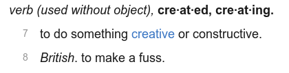
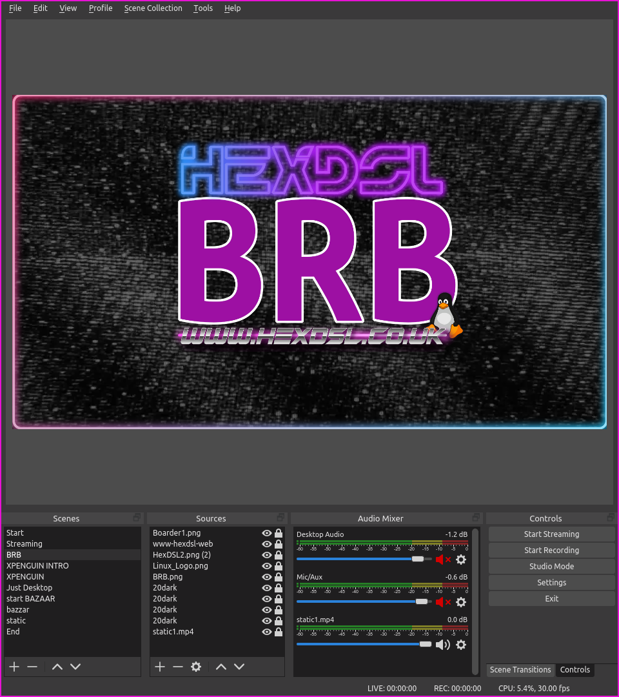
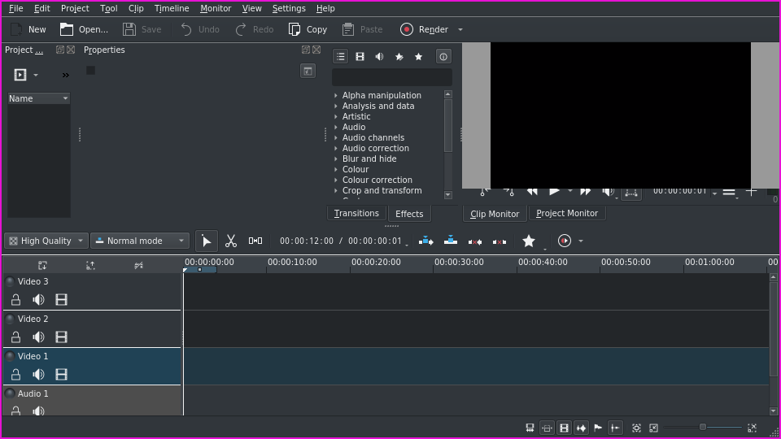
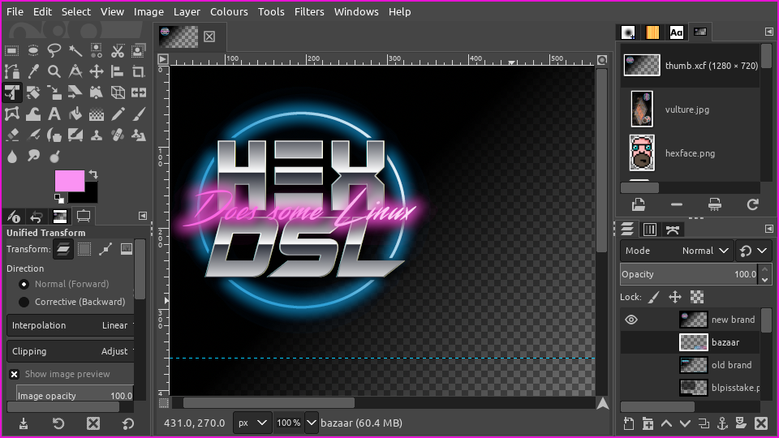
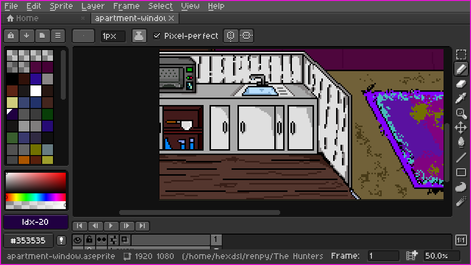

.,-::::: :::::::.. .,:::::: :::. :::::::::::: ... :::::::..
,;;;'````' ;;;;``;;;; ;;;;'''' ;;`;;;;;;;;;;''''.;;;;;;;. ;;;;``;;;;
[[[ [[[,/[[[' [[cccc ,[[ '[[, [[ ,[[ \[[,[[[,/[[['
$$$ $$$$$$c $$"""" c$$$cc$$$c $$ $$$, $$$$$$$$$c
`88bo,__,o, 888b "88bo,888oo,__ 888 888, 88, "888,_ _,88P888b "88bo,
"YUMMMMMP"MMMM "W" """"YUMMMYMM ""` MMM "YMMMMMP" MMMM "W"
The terms ‘creator’ or ‘author’ even ‘artist’ are all totally bollocks. I mean it. Totally self important words that make the person who is accused of being the ‘thing’ special. It’s like bottling your own shit and then talking about the aroma.
The reality is that every human alive needs only three things to make a thing that other people may or may not like. None of them are special:
- Desire to make stuff.
- Opportunity to make stuff.
- Repetition of making stuff (to ‘get good.’)
There is also a 4th thing that can help in this regard and that’s:
- Natural Aptitude.
Number 4 is one of those things that most people don’t have, so it can be ignored. Also, if you do have a dose of number 4, you won’t know it. Unless your a self obsessed prick. So if you think you have number 4, then its more likely you don’t, but you are a self obsessed prick so you think you do.
In the following ramble its worth knowing that I (HexDSL) have had a large portion of number 1, a normal sized portion of number 2 and more of number three than most people realise (none of number 4.)
The video’s that I make and upload to YouTube or stream on Twitch are designed to entertain and occasionally inform. I am not claiming to know anything other than my own preferences and habits. These are what I share with you in this post. I am also not claiming that the stuff I make is good. It’s fun to make and fills a hole that used to be there in my mind.
Under each application suggestion I have added a link to “get it” thats nonsense obviously you should use your package manager but if you wanted to read more, then it maybe of use to have a link.
Video Capture and Editing.
- OBS: The most integral part of making a video is recording that video. In this case I use OBS. SimpleScreenRecorder (SSR) is another good option and some people write their own scripts to layout their screen and record it with ffmpeg. There is no wrong way to record video as long as it doesn’t look shit in the end. Personally I favour OBS because I can edit a layout while recording and change scenes with shortcut keys.

For scene changes while I’m streaming I do not use one of those ‘Stream Decks’ as the are expensive. Instead I use a £7 wireless Number pad. It works great and as its wireless I can adjust it so its always at hand. OBS seems to get on fine with it but it does mean I can’t play Rogue likes with it while OBS it open. Not something most people care about I wouldn’t think.
- Kdenlive: This is the video editor that I like. There are many editors but I like this one. The thing that Sticks out to me is that its got a good Work-flow that is easy to learn but it also has a lot of effects and adjustments that you can add to video with very little effort. I suppose really, whatever video editor you get used to will work for most projects. Your preferences will form as you try to work with either long or complex projects. I also use an older version of Kdenlive because the newer versions have some odd GUI things going on and I decided that I would abstain for updates until I here its got over the code hump.

ART WORK
- GIMP: Yes it has a stupid name. BUT an awesome mascot. I use GIMP for all my thumbnail and video asset needs. Granted by abilities are shit so I ask friend Cyberus to help (do it all) but GIMP is great. I use it to cobble together whatever my GIMP skills allow and it seems to do everything I need it to do.

FYI the little mascott is called Wilber…. Apparently.
Also, Those people that are saying “its not as good as photoshop” you fuckers! Listen, unless you are using it at a high professional level theres a good chance that you dont actually need any of the shit Photoshop does. Just learn to use Gimp and get on with making shit. If you DO need Photoshop for more than meme motivated reasons. Go and use it and stop giving me a headache. Just piss off to windows or mac or something! for the rest of us, GIMP is bae! (I say ‘bae’ now apparently.)
- Aseprite: Its an art package designed specifically to edit pixel art. Sounds stupid, I know. GIMP can do that. BUT Aseprite has cool option and the focus on Pixel art makes it a pleasure to use. I like Pixel Art but I am bad at it. The big down side is that while the older version is open source, its now a proprietary application. But also the git version looks the same as the one that I run via Steam to me. I had to include because I really like it but you should do way more looking into its license than I did… It was very boring.

I really do like this one. I love to draw. One day, I hope to be good.
Perpetration
Look, I know you expect some fancy office stuff here but the truth is, Locally I use NeoVim for all my working. That it. This blog was written in NeoVim and I don’t keep a word processor installed because NeoVim does it all. Actually when I have to use Microsoft Word or something at work I am always shocked at how shit it is. Writing in NeoVim is like having a supernatural connection to your computer. You don’t have to actually think about what you want to happen to the words, you just type the words and all the formatting and manipulation is done by your fingers while you are thinking of the next thing to type. Yeah. I am a Vim obsessed dude for sure.
You do have to learn Vim though. Learning it is the hard part. I’m not qualified to teach you either. Go to YouTube and type “vim basics” and I’m sure there will be a highly rated video that will educate you better than I could.
For any collaborative editing I need to do with a channel guest I use HackMD Its a free markdown editor that’s bloody good and you can share a document by linking the URL its GREAT for editing show notes or group lists… Shame its not as good as Vim! )
PC Setup
Okay, I’m not going point by point here because I’m not sure there is any point. Most people just want to know the graphics package that I recommend or the capture software I use. But My PC setup is well documented on my Channel.
I use a shitty I7 3770 with 16GB of RAM, an NVIDIA 970 and a shitload of storage that I don’t really need. My phone is a Pixel 3 (not that anyone should care.) I have 3 Benq Monitors that are 27 inch. They are 1080 Screens. Long term I want to switch to a laptop and a dock. Given that most games I play are little Indie titles its hard to care about that 970 I have.
OS and desktop choices
I run Arch. Because I like the AUR and the way it doesn’t have lots of pre-installed packages to remove. I use DWM as my Window Manager. All the config stuff is hosted on my Gitlab page in the form of DIFF files.
I use Zsh instead of bash because I like how it handles history and its Syntax completion is better than the alternative in my opinion.
My terminal of choice is URXVT (as client/server not single instances) and i use Ranger for file management. When I do need a GUI file manager (when edit artwork or video files its easier to have Drag and Drop) I use Thunar (Because I like it)
I use DUNST for notification and NeoMutt for Email. Oh, and Wiichat for IRC.
My web browser of choice is FireFox but I use lots of add-ons and tweaks to make it how i like it.
Thats it…. I think I Covered Everything.
Thanks for reading.